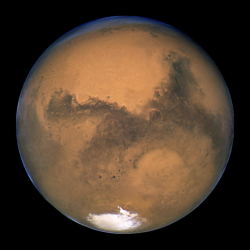

Mars is the fourth planet in the solar system and is the most similar to Earth as it shares similar size and weight. Mars is 227.9 million km away from the sun, taking 687 days to fully orbit the sun and making it the fourth planet and is the last of the terrestrial planets. Mars got its name from the Roman god of war, Mars, and often Mars is also referred as the "Red Planet." The symbol it was given is the ♂ symbol and the arrow at the top right corner represents the arrow or spear emerging from it as Mars was the god of war. Mars is the second smallest planet taking up 1.6318×1011 km3 and weighing 6.4171×1023 kg, giving Mars a similar gravitational pull as Mercury with 3.711 m/s2. Referred as the "Red Planet," it's pretty obvious that Mars is red, and you guessed it, Mars is red. On average the temperature on Mars is 210K, maxing out at 308K and dipping down to 130K.
Wikipedia, The Free Encyclopedia. (April 27, 2016) Mars. Retrieved September 25, 2016, from https://en.wikipedia.org/wiki/Mars
Digital Image: Mars, ~https://upload.wikimedia.org/wikipedia/commons/thumb/5/58/Mars_23_aug_2003_hubble.jpg/275px-Mars_23_aug_2003_hubble.jpg~ Retrieved September 25, 2016.
Digital Image: Mars as Energy of Anger, ~http://highmars.org/wp-content/uploads/2016/05/high-mars-10.jpg~ Retrieved September 25, 2016.